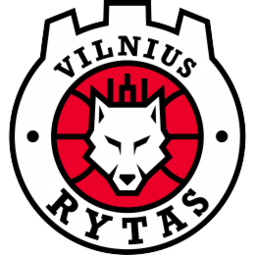

Vilniaus „Rytas“

Įkūrimo data:
1997
Vyr. treneris:
Giedrius Žibėnas
Dabartinė komandos sudėtis
- Normantas, Margiris
- Williams, Jarvis
- Adomavičius, Arnas
- Radzevičius, Gytis
- Kariniauskas, Vaidas
- Pacevičius, Martynas
- Uleckas, Lukas
- Girdžiūnas, Mindaugas
- Leissner, Tanner
- Smith, Speedy
- Butkevičius, Arnas
- Buva, Ivan